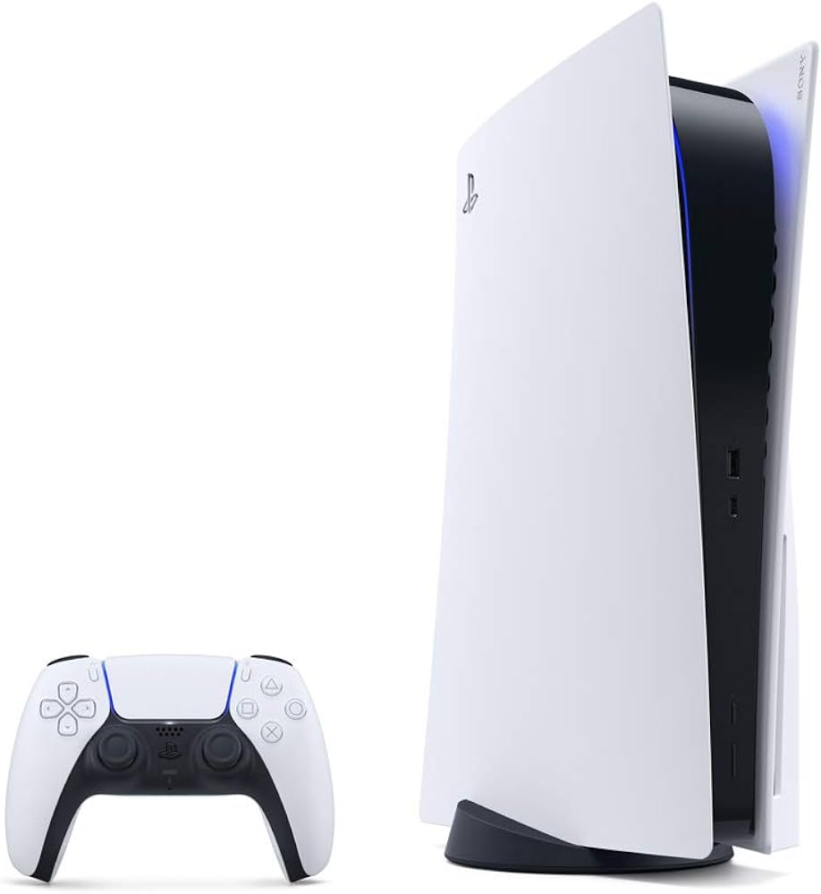

Consola PlayStation 5

RECOMENDADO
Consola PlayStation 5
Color: Blanco
Por Sony
$14,000
$12,499 10% OFF
en 12 meses sin intereses de $1,041.58
Llega gratis hoy
Descripción del producto
La PlayStation 5 es la última consola de Sony, que ofrece una experiencia de juego de próxima generación con gráficos impresionantes, tiempos de carga ultrarrápidos y una inmersión sin precedentes gracias a su innovador control DualSense.
Características principales:
- Resolución 4K nativa con capacidad de hasta 120 FPS
- SSD ultrarrápido para tiempos de carga casi instantáneos
- Ray tracing en tiempo real para gráficos más realistas
- Control DualSense con retroalimentación háptica y gatillos adaptativos
- Audio 3D Tempest para una experiencia sonora inmersiva
- Compatibilidad con la mayoría de los juegos de PS4
Especificaciones técnicas:
- CPU: 8 núcleos Zen 2 a 3.5 GHz
- GPU: 10.28 TFLOPS, 36 CUs a 2.23 GHz
- Memoria: 16GB GDDR6
- Almacenamiento: SSD personalizado de 825GB
- Unidad óptica: Blu-ray 4K UHD
- Salida de video: Hasta 4K 120Hz, 8K